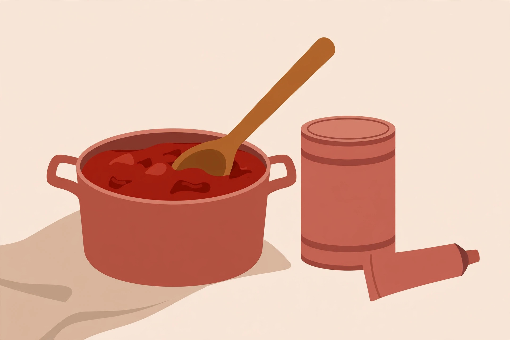

Pantry pasta sauces from scratch ingredients

Most “homemade sauce” lists quietly cheat. Read the ingredients and there is fresh basil, heavy cream, eggs, bacon, or a pile of fresh tomatoes — all excellent, none of them available on the night the cupboard is bare and the jar of sauce turned out to be empty. This guide applies a stricter test: every sauce below is built only from shelf-stable ingredients, the cans, jars, and packets that keep for months. Five sauces cover almost any bare-cupboard night: a proper marinara when there are canned tomatoes, an oil-and-garlic sauce when there are not, a tuna sauce when dinner needs protein, a peanut sauce when the mood is not Italian at all, and a pink sauce that uses evaporated milk the way other recipes use cream.
Start with what the cupboard actually has
| What you have | Make | Time |
|---|---|---|
| Canned crushed or diced tomatoes + tomato paste | Pantry marinara | About 25 minutes |
| No tomatoes, but olive oil and garlic | Oil, garlic, and chili sauce | About 10 minutes |
| A can of tuna, olives or capers | Tuna, olive, and caper sauce | About 15 minutes |
| Peanut butter and soy sauce | Peanut sauce for pasta | About 10 minutes |
| Marinara basics plus evaporated milk | Pink sauce | About 30 minutes |
The paste-first technique
One technique improves every tomato sauce in this guide. Before the canned tomatoes go in, cook the tomato paste in the olive oil with the garlic and dried herbs for two to three minutes, stirring, until it darkens a shade and smells sweet instead of raw and tinny. Published pantry marinara recipes use the same move: But First We Brunch's pantry-shelf marinara cooks the paste with a little brown sugar and red pepper flakes for two to three minutes before the tomatoes, and the Whole You Nutrition pantry marinara cooks it one to two minutes, until it starts to brown, then deglazes the pan. Frying the paste drives off the raw edge and deepens the flavor in a way that extra simmering alone does not — it is the difference between a sauce that tastes assembled and one that tastes cooked.
Sauce 1: 20-minute pantry marinara
- Warm 2 tablespoons of olive oil in a saucepan over medium heat. Add chopped onion if you have one (dried onion flakes work), and cook until soft, about 3 to 5 minutes.
- Add 2 cloves of garlic (or garlic powder), a teaspoon each of dried basil and dried oregano, and cook about a minute, until fragrant.
- Stir in 2 to 3 tablespoons of tomato paste and a pinch of sugar. Cook 2 to 3 minutes — the paste-first step — stirring so it does not catch.
- Add a 28-ounce can of crushed or diced tomatoes with its juice, plus a bay leaf if you keep them. Bring to a boil, then lower to a simmer.
- Simmer uncovered 10 to 20 minutes, until slightly thickened. Taste of Home's simple sauce simmers about 10 minutes; the pantry marinara recipes go to 20 or beyond, and the sauce only gets rounder. Salt at the end.
- Remove the bay leaf. Leave chunky, or blend smooth. Toss with pasta and a splash of its cooking water.
What success looks like: the sauce coats the back of a spoon, tastes tomato-sweet rather than sharp, and no raw, metallic paste flavor survives.
Sauce 2: oil, garlic, and chili flakes
The oldest no-tomato fallback: warm olive oil gently with sliced garlic and a pinch of chili flakes until the garlic is pale gold — not brown, which turns it bitter — then toss with hot pasta and a ladle of its starchy cooking water. The water and oil emulsify into a glossy coating. A handful of breadcrumbs toasted in the same oil adds crunch; a squeeze of lemon or a splash of vinegar at the end keeps it bright. When even garlic is gone, sauce roundups fall back to pasta tossed in olive oil with dried herbs and hard cheese, which is honest food and takes four minutes.
Sauce 3: tuna, olive, and caper sauce
- Warm olive oil with garlic and chili flakes. Add a drained can of tuna, breaking it into chunks, not shreds.
- Add a handful of sliced olives and a spoonful of capers with a little of their brine. Warm through for 2 to 3 minutes — tuna is already cooked, and long cooking dries it out.
- If a can of tomatoes is available after all, add it now and simmer 10 minutes for a red tuna sauce; if not, toss the mixture straight with pasta and its water, plus lemon juice or vinegar.
What success looks like: distinct flakes of tuna in a briny, glossy sauce, seasoned mostly by the olives and capers — taste before adding salt, because the jars bring plenty.
Sauce 4: peanut sauce for pasta
Whisk half a cup of peanut butter with hot pasta water, added a splash at a time, until it pours like a sauce. Season with soy sauce, a spoonful of vinegar, a little sugar, garlic powder, and chili flakes or hot sauce. The hot water is the whole trick: cold liquid makes peanut butter seize into a clump, while hot water melts it smooth. Toss with noodles and anything crunchy — a jarred pepper, a handful of peanuts, shredded cabbage if one is lurking. It is the fastest sauce here and the one that tastes least like a compromise.
Sauce 5: pink sauce with evaporated milk
Evaporated milk is the cupboard's answer to cream: shelf-stable, concentrated, and far less likely to split than fresh milk in a hot tomato sauce. Make the marinara above, lower the heat until it stops bubbling, and stir in evaporated milk a splash at a time until the sauce turns salmon-pink and tastes round instead of sharp — roughly half a small can for a batch. Keep it below a simmer after the milk goes in; boiling a milk sauce hard is how it turns grainy.
Fixes for thin, bitter, or flat sauce
Thin: simmer uncovered longer — water is the problem and time is the fix. A spoonful of tomato paste stirred in mid-simmer thickens and deepens at once. Bitter or sharp: a pinch of sugar is the classic correction (both published pantry marinaras above use a little), and a small knob of butter or an extra glug of olive oil rounds acidity without sweetness. Flat: it is almost always salt or acid. Add salt a pinch at a time, then a few drops of vinegar or lemon juice; flavor that still will not wake up usually wants heat — more chili flakes.
Storing homemade sauce safely
Homemade sauce follows leftover rules, not pantry rules. FoodSafety.gov's guidance is to refrigerate perishable food within two hours, in shallow containers so it cools quickly, and to use or freeze it within about four days. Taste of Home's storage note for its simple tomato sauce is a little more generous for that specific sauce — five to seven days refrigerated, in covered glass if you have it, since acidic tomato can stain plastic — and up to three months frozen, thawed overnight in the fridge. When the two differ, the cautious reading wins: plan to eat refrigerated sauce within four days, freeze the rest in portions, and reheat leftovers until steaming throughout — sauces and gravies should come back to a rolling boil.
FAQ
Can marinara be made with only tomato paste and no canned tomatoes? Yes, in a pinch: fry 4 to 5 tablespoons of paste as above, then whisk in about two cups of water and simmer 10 minutes. It will be thinner and less bright than the crushed-tomato version, but it is a real sauce.
Why does the tuna sauce taste salty before any salt is added? Olives, capers, and their brine are salt delivery systems. That is their job in the sauce — always taste this one before salting.
Does sauce freeze well? The tomato sauces freeze best. The pink sauce can separate slightly on thawing; whisk it while reheating and it usually comes back together.